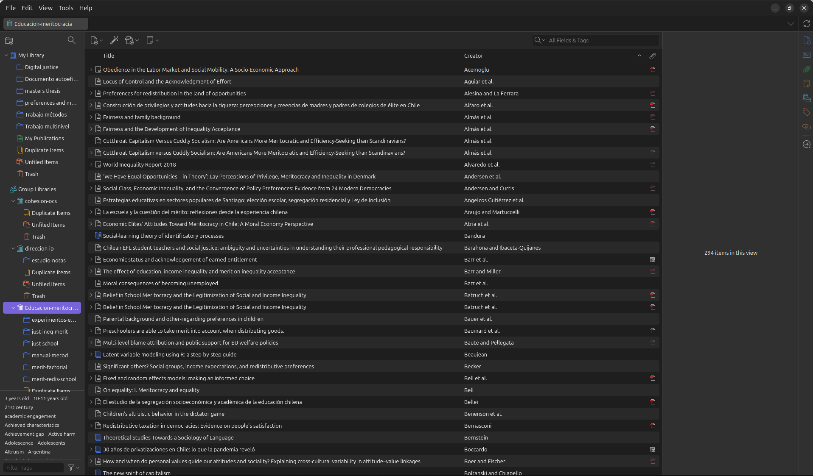
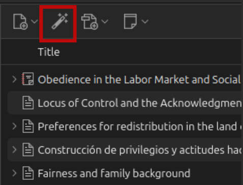
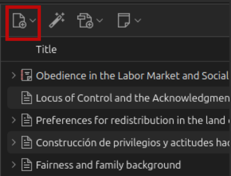
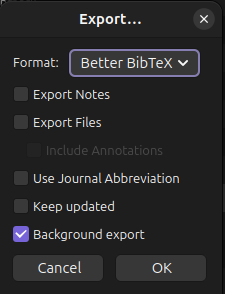
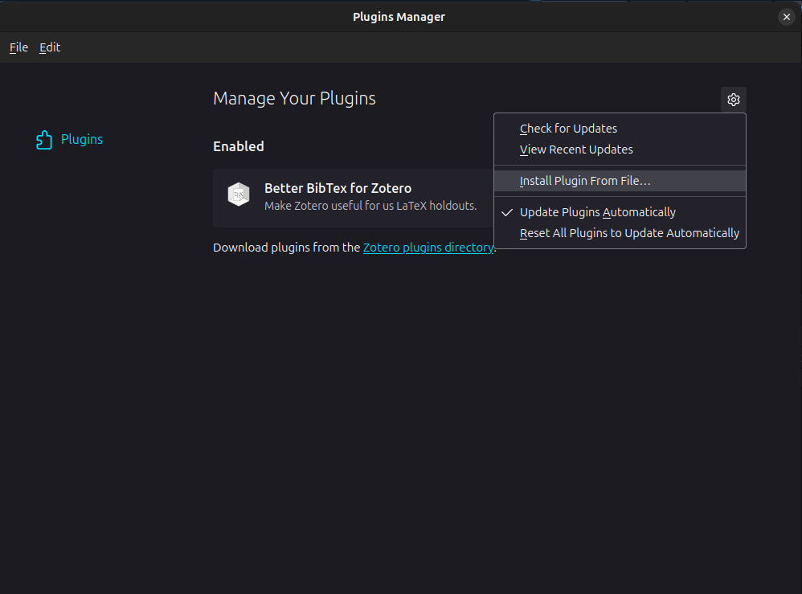
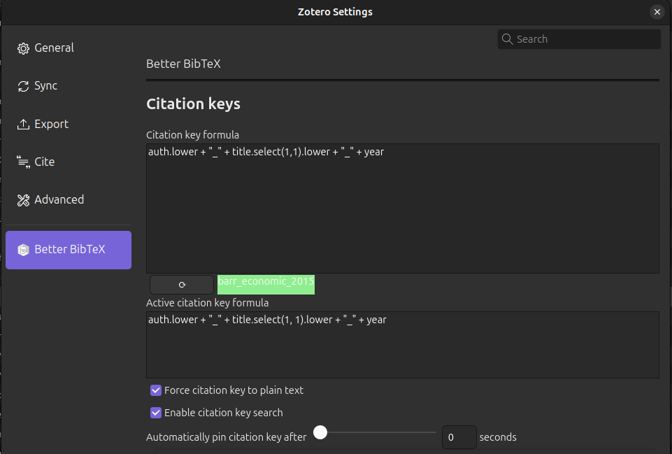

Módulo 5 - Automatización de referencias con Zotero

Contenidos
- 1.- Gestores de referencias
- 2.- Citas en texto plano
- 3.- Automatización de referencias bibliográficas
Gestores de referencias
Referencias: un trabajo de hormiga
Todo trabajo de investigación necesita un apartado de referencias, el cual usualmente es construido a modo manual
Elaborar las referencias de esta manera puede transformarse en una tarea laboriosa y, a veces, estresante
Existen herramientas que pueden amenizar en gran medida este proceso
Gestores de referencias
Los software especializados en referencias permiten recolectar, organizar y compartir estos elementos
A día de hoy, existe una gran oferta en cuanto a programas de referencias bibliográficas: Endnote, Mendeley, Refworks, Zotero
De aquí en adelante trabajaremos con Zotero, software libre y de código abierto
Zotero
Para instalar: https://www.zotero.org
Además, se recomienda instalar su extensión de Google Chrome, la cual permite integrar referencias con 1 solo click
Vista general

Guardar referencias
1) Desde el navegador:
Cuando hay una referencia presente en la página, presiona el botón del conector y la referencia se guardará automáticamente
(Zotero debe estar abierto).

2): Desde Zotero: vía DOI/ISBN/ISSN

2): Desde Zotero: modo manual

Citas en texto plano
BibTex
formato de almacenamiento de citas en texto plano (no es un programa)
Un archivo Bibtex tiene extensión .bib, donde deben estar almacenadas todas las referencias citadas en el texto
Estructura de referencia en BibTex

Archivo BibTex (.bib)
Un archivo bibtex tiene múltiples referencias una después de la otra, el orden no es relevante.
Cada referencia posee una serie de campos con información necesaria para poder citar
Este formato se puede ingresar manualmente, copiar y pegar de otras fuentes, o automatizar desde software de gestión de referencias (detalles más adelante)
Estilo de citación (.csl)
Además de las referencias en .bib, necesitamos poder dar el estilo de formato deseado a citas y bibliografía, mediante archivos csl (Citation Style Language)
Estos estilos (en archivos .csl) se pueden bajar desde repositorios. Se recomienda el siguiente: https://www.zotero.org/styles
Puntos claves de la citación
La forma de citar es a través de la citation key que identifica la referencia, añadiendo un @ como prefijo. Ej:
- Tal como señala [@sabbagh_dimension_2003], los principales resultados ...
Al renderizar, esto genera:
- Tal como señala Sabbagh (2003), los principales resultados …
Maneras de citar
| Se escribe | Renderiza |
|---|---|
Como dice @sabbagh_dimension_2003 |
Como dice Sabbagh (2003) |
Sabbagh [-@sabbagh_dimension_2003] dice ... |
Sabbagh (2020) dice … |
Sabbagh [-@sabbagh_dimension_2003, pp.35] dice ... |
Sabbagh (2020, p.35) dice … |
Automatización de referencias bibliográficas
Zotero y BibTex
Zotero cuenta con dos utilidades claves, las cuales permiten:
Automatizar la generación de un archivo .bib a partir de una biblioteca
Automatizar la incorporación de referencias bibliográficas a un documento
Generación de archivo .bib
Se pueden utilizar todas las referencias de una biblioteca o seleccionar algunas de ellas
Carpeta -> boton derecho -> export -> formato Bibtex
Guardar archivo .bib en carpeta del proyecto

BetterBibTex
- Plug-in de Zotero que permite exportación de archivos .bib automática y sincronizada
Instalación:
Bajar archivo desde el sitio del desarrollador: https://retorque.re/zotero-better-bibtex/installation/
En Zotero: Tools -> Plugins -> Ruedita dentada -> Install plugin from file
Reiniciar Zotero


Exportando referencias
Posicionarse sobre carpeta, botón derecho y
Export collection- Formato: Better BibTex - Keep updated (sincronización automática) - dar ruta hacia carpeta del proyectoPrecaución: no carácteres especiales ni espacios en el nombre del archivo .bib

Citation key
Existen múltiples formas de organizar las claves BibTex
Mantener un mismo formato es importante, sobre todo para trabajo colaborativo
Se generan desde la pestaña Citation Keys de BetterBibTex
Recomendación:
[auth:lower]_[shorttitle1:lower]_[year]
Referencias en documentos Quarto
- Para esto, se añaden algunas especificaciones en el preámbulo del documento (YAML), por ejemplo:
---
bibliography: referencias.bib
csl: apa.csl
---
Y aquí comienza el documento ...